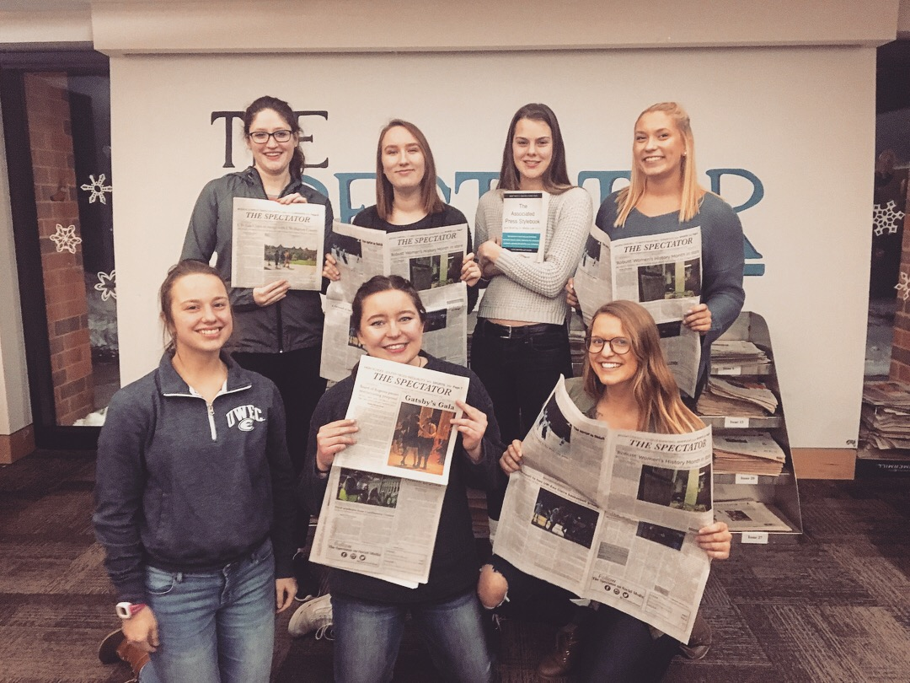

All About The Spectator
The Spectator is UW-Eau Claire's primary print news source. It has played a major role on the UW-Eau Claire campus
since 1923. The dedicated staff strives to inform the campus community in an unbiased, interesting, and truthful
manner. Under the supervision of faculty adviser Jan Larson, the staff aims to create consistently high-quality
content that adheres to the Associated Press (AP) Style. The all-student staff of around 30 people is made up
of a handful of Staff Writers, two Copy Editors, a Chief Copy Editor, a Multimedia Editor, an Opinion/Editorial
Editor, a Currents Editor, two Sports Editors, a News Editor, a Managing Editor, and an Editor in Chief. The
Spectator takes pride in being run by mostly women. Pictured below is the female editorial staff (minus the Multidmedia
Editor). While the staff no longer recieives monetary compensation, the experience and knowledge attained from
working for the newspaper is priceless.

Each Thursday, the staff meets in The Spectator office (which is located in Hibbard Hall on campus) for a weekly
budget. Here, any problems that were noticed during the week are addressed, editors describe the kinds of stories
they need covered for their section, and stories for the next deadline are assigned. While print issues are distributed
every other week, there is constantly content being posted online. In order to reach as many people as possible,
The Spectator issues are distributed all over campus. There are The Spectator newsstands in almost every building
on campus. Additonally, some local businesses, like Racy D'Lene's Coffee Lounge on Water Street, have a few copies
of The Spectator available for customers to view.